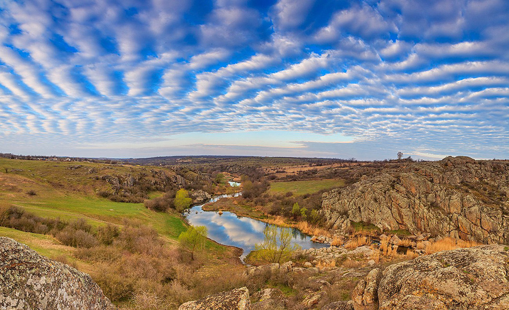

Види спорту
Актовський каньйон
Українське мертве море
Вилкове
Дендропарк Олександрія
Водоспад Гук



Каньйон знаходиться в Миколаївській області на річці Мертвовод.
Чому варто відвідати це місце?
Площа території складає 250 гектарів, а глибина 40-50 метрів, тому робити тут можна в прямому сенсі що завгодно.
Потрібно відзначити, що Актовський каньйон – це унікальний симбіоз водної та лісової екосистем, які в сумі дають чисте повітря і мрійливий настрій.
Ансамбль скель і гранітних валунів, які розташовані на території каньйону – унікальне місце у всій Європі. Це неймовірно красиво!
Назад
В Україні є власне мертве море, розташоване поблизу Херсона. Там його називають лемурійське, адже вода в цьому озері забарвлена в рожевий колір.
Та на цьому дива не закінчуються, адже ця вода вважається лікувальною і омолоджуючою.
Найцікавіше те, що в нашому Лемурійському озері на 5% більше солі, ніж в мертвому морі!
Назад
Вилково розташувався на воді, як справжня Венеція! За чудесами однозначно потрібно їхати сюди.
Крім того, тут зливаються воєдино Дунай і Чорне море – видовище від якого неможливо відірватися.
Це місце чуло тисячі зізнань у коханні.
Назад
Дендропарк Олександрія знаходиться в двох годинах від Києва – Білій Церкві.
Парк заснувано за 11 років до народження Пушкіна – в далекому 1788. До речі, парк, знаменитий поет відвідував декілька разів! Можливо, так і з’явився «Євгеній Онєгін».
У дендропарку знаходяться понад 5 тисяч старовинних і рідкісних рослин. Тут також є фонтани і водоспади, монументи і барельєфи, які створюють цілий комплекс естетичних картинок.
Назад
Водоспад Гук – найбільший водоспад в Карпатах, його ще називають Женецький.
Висота Гука становить 15 метрів, що особливо помітно в літній час. Влітку в водоспаді можна купатися, оглядати околиці з оглядового майданчика і підніматися прямо до його підніжжя.
Взимку тут теж є чим зайнятися: крижані каскади, утворені в результаті падіння води, переносять зі світу реального в задзеркаллі.
Назад